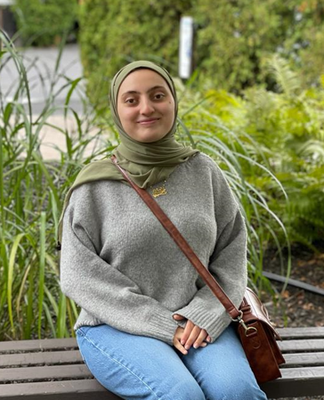

A little about me...
O utside the Lumbridge castle gates, a reliable stone bridge connects the
two river sides. Steps and strides of characters wielding boots or
bare, mark a journey of many kinds. Though a foot, dark green of
color, cannot pass through. His pacing tread shows frustration and
misery, common characteristics amongst all the Gielinor monsters.
”Stupid game.” The green Goblin grumbles. “Me no have freedo-argh!”,
a level twelve player attacks Goblin, level two, by using his slash
with his iron scimitar, depleting Goblin’s health points to three
with the first hit.